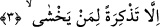
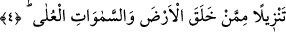

“__WORD__; yorgunluk mânâsında daha yaygındır. Tayları terbiye ederek onlardaki
serkeşliği yok etmek ve onları binilir hale getirmek için “eşkâ” fiili kullanılır ki, bu iş
son derece yorucu bir iştir. Terbiyeci, bu işte çok meşakkat çektiği ve yorulduğu için bu
kelime darb-ı mesel olmuştur.
Âyetin mânâsı ise şöyledir: Biz sana bu Kur’ân’ı, Kureyş’in inkâr etmesinden dolayı
son derece üzülüp yorgun düşesin diye indirmedik. Çünkü sana düşen sadece tebliğ
vazifesidir. Sen de onu yaptın. Artık onları ona inandırmak senin görevin değildir. Ya da
biz sana bu Kur’ân’ı, çok riyâzat, teheccüd ve tek ayak üzere kıyâmda durman için
indirmedik. Çünkü sen müsâmahalı hanif din ile gönderildin. Biz sana Kur’ân’ı,
meşakkate düşesin, gece uyumayasın, uzun süre namazda kıyamda durmak sebebiyle
mübârek ayağına elem ulaşsın diye indirmedik.
et-Te’vîlâtü’n-Necmiyye’de ise şöyle der: “Biz sana Bu Kur’ân’ı” dünyâda ve
âhirette “güçlük çekesin diye indirmedik.” Bilakis O’nun ahlâkıyla ahlâklanıp yüce bir
ahlâk üzere olarak saîd/hoşbaht olman için, yer ve gök ehlinin de senin sâyende
saîd/hoşbaht olması için onu kalbine indirdik. Şakâvet, saâdetin (ebedi mutluluğun)
zıddıdır.
Âyetin müşriklerin iddiâlarına bir cevap ve yalanlama olması da mümkündür. Çünkü
Ebû Cehil ve Nadr b. Hâris Hz. Peygamber (a.s.)’a: “Sen şakîsin, çünkü atalarının
dinini terk ettin. Kur’ân, kendisiyle şakî olman için sana indirildi.” dediler. Âyet
müşriklerin bu iddiâlarını reddetmektedir. Çünkü Kur’an ve İslâm dini her hayrı elde
etmenin ve her mutluluğa ulaşmanın merdiveni, vâsıtasıdır. Kâfirlerin içinde
bulundukları durum ise şakâvetin ta kendisidir.
3. Ancak korkanlara bir öğüt (olarak indirdik).
Biz Kur’ân-ı tebliğ ederken yorulasın diye değil; “ancak” Allâh’ı tanıyan ve ondan
“korkanlara bir öğüt” olarak, onlara öğüt vermen için indirdik. Çünkü Hz. Peygamber
(a.s.) için “âlemlere uyarıcı olması için” (el-Furkan, 25/1) buyrulmaktadır. Uyarıdan
faydalanacaklar, Allâh’ı bilen ve O’ndan korkanlardır. Tefsir-i Kebîr’de şöyle der:
“korkanlara” ifâdesine Rasûl (s.a.) de dâhildir. Çünkü o haşyet ve ibret almada
herkesin üstündedir.
4. O, yeri ve yüce gökleri yaratan tarafından peyderpey indirilmiştir.